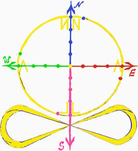
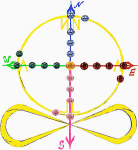

Trade Mark Journal No.2025/018 2 May 2025
UK00004183385 2 April 2025 (3,4,14,18,25)
Mark 1

Mark 2

A circle crossed by perpendicular arrows in the form of a compass: North is blue, East is red, South is pink, West is green, infinity sign underneath it with lower bottom pink arrow crossing in the middle of it, 21 dots/circles/stones in the same colour scheme as the arrows that they are on and beyond the circle (4+1), the middle of the compass contains yellow one. NALLAN is written inside the circle in the mirror reflection image, starting on the top right, going clockwise.
No claim is made to the exclusive right to use the sign of compass, circle or perpendicular arrows as well as the sign of infinity apart from the mark as shown.
- Class 3
- Perfume; Perfumes; Perfume oils; Perfumery and fragrances; Amber [perfume]; Fragrances; Oils for perfumes and scents; Musk [perfumery]; Cologne; Perfume water; Room perfume sprays; Liquid perfumes; Colognes; Scents; Fragrance emitting wicks for room fragrance; Perfumery; Cedarwood perfumery; Extracts of perfumes; Eau de cologne [cologne water]; Extracts of flowers [perfumes]; Flowers (Extracts of -) [perfumes]; Extracts of flowers being perfumes; Body deodorants [perfumery]; Ionone [perfumery]; Deodorants for personal use [perfumery]; Body fragrances; Perfumeries; Vanilla perfumery; Household fragrances; Room perfumes in spray form; Room fragrances; Perfumery products; Cologne water; Synthetic perfumery; Scented body spray; Eau de Cologne; Eau de cologne; Eau de colognes; Scented room sprays; Eaux de Cologne; Eaux de cologne; Agarwood [incense]; Geraniol fragrancing compounds; Natural perfumery; Perfumed water; Eau de parfum.
- Class 4
- Aromatherapy fragrance candles; Musk scented candles; Perfumed candles; Candles (Perfumed -); Scented candles; Fragranced candles.
- Class 14
- Jewelry; Necklaces [jewelry]; Pendants [jewelry]; Bracelets [jewelry]; Brooches [jewelry]; Jewelry brooches; Brooches being jewelry; Jewelry (Paste -) [costume jewelry]; Paste jewelry [costume jewelry]; Necklaces [jewellery, jewelry (Am.)]; Bracelets [jewellery, jewelry (Am.)]; Jewelry stickpins; Ornaments [jewellery, jewelry (Am.)]; Necklaces [jewellery]; Trinkets [jewelry]; Trinkets [jewellery, jewelry (Am.)]; Diamond jewelry; Amulets [jewelry]; Brooches [jewellery, jewelry (Am.)]; Pearls [jewelry]; Lockets [jewelry]; Pearls [jewellery, jewelry (Am.)]; Amulets [jewellery, jewelry (Am.)]; Charms [jewelry]; Jewelry charms; Charms for jewelry; Costume jewelry; Rings [jewelry]; Charms [jewellery, jewelry (Am.)]; Rings [jewellery, jewelry (Am.)]; Jewellery; Medallions [jewellery, jewelry (Am.)]; Clasps for jewelry; Lockets [jewellery, jewelry (Am.)]; Chains [jewellery, jewelry (Am.)]; Bracelets [jewellery]; Jewelry hatpins; Ivory [jewellery, jewelry (Am.)]; Pins [jewellery, jewelry (Am.)]; Jewelry caskets; Shoe jewelry; Pendants [jewellery]; Paste jewellery [costume jewelry (Am.)]; Paste jewellery [costume jewelry [Am.]]; Crucifixes as jewelry; Jewelry chains; Chains [jewelry]; Ornaments [jewellery]; Silver thread [jewellery, jewelry (Am.)]; Gold thread [jewellery, jewelry (Am.)]; Wire of precious metal [jewellery, jewelry (Am.)]; Trinkets [jewellery]; Identification bracelets [jewelry]; Brooches [jewellery]; Jewellery brooches; Hat jewelry; Imitation jewelry; Threads of precious metal [jewellery, jewelry (Am.)]; Jewellery, including imitation jewellery and plastic jewellery; Items of jewellery; Jewellery items; Rings being jewellery; Rings [jewellery]; Jewellery chain of precious metal for necklaces; Amulets being jewellery; Amulets [jewellery]; Costume jewellery; Charms [jewellery]; Charms for jewellery; Jewellery charms; Identification bracelets of precious metal [jewelry]; Lockets [jewellery]; Pearls [jewellery]; Jewelry findings; Wristlets [jewellery]; Jade [jewellery]; Plastic bracelets in the nature of jewelry; Agate as jewellery; Fashion jewellery; Jewelry for the head; Decorative brooches [jewellery]; Gold jewellery; Amber pendants being jewellery; Jewellery caskets; Jewelry cases; Amberoid pendants being jewellery; Jewellery chain of precious metal for bracelets; Bracelets made of embroidered textile [jewelry]; Shoe jewellery; Silver thread [jewelry]; Jewellery stones; Women's jewelry; Jewellery in semi-precious metals; Gold thread jewelry; Gold thread [jewelry]; Children's jewelry; Jewellery products; Plastic costume jewellery; Jewellery for personal adornment.
- Class 18
- Fashion handbags.
- Class 25
- Fashion hats; Menswear; Ready-to-wear clothing; Knitwear [clothing]; Face masks [fashion wear] ; Casual clothing; Foulards [clothing articles]; Clothing; Casual footwear; Parts of clothing, footwear and headgear; Footwear; Leather clothing; Clothing of leather; Leather (Clothing of -); Leisure clothing; Denims [clothing]; Knitwear; Smart clothing; Corsets [clothing, foundation garments]; Articles of clothing; Footwear for women; Headbands [clothing]; Headbands for clothing; Cashmere clothing; Clothing of imitations of leather; Leather (Clothing of imitations of -); Furs [clothing]; Leisure footwear; Articles of clothing made of leather.
Natalie Lapteva